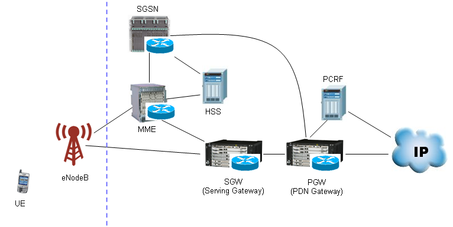

LTE Quick Reference Go Back To Index Home : www.sharetechnote.com
SAE (Service Architecture Evolved)
Simply put, SAE is just a terminology representing LTE network architecture. More simply put, SAE = LTE Network -:). If I represent it graphically, it looks as follows. You will find the various different type of SAE diagram from various source ranging from very simple to extremly complicated one. Following is a kind of simple presentation but it has almost everything of LTE component. The complicated diagram you would find from other source is just a combination of LTE network and other networks like UMTS, GSM etc.

Video Tutorials :
- http://www.youtube.com/watch?v=GYrFwstUClo&feature=related
- http://www.youtube.com/watch?v=-gnV4WuNjUU&feature=related
- http://www.youtube.com/watch?v=0hrKcvNO6G4&feature=related(Award Solution)
You can extend the LET SAE as follows to interface with other technology.

Now you'd better understand function of each node (block) in the diagram. The more you know about each of these blocks, the easier your troubleshooting, test case creation, test will be since the role of each of these nodes will be related to the information elements (IE) of RRC/NAS message. But here I would just put the brief summary of functions of each node and I leave it to you to dig into the details.
MME (Mobility Management Entity): Just remember this as the most important component of SAE which has following functionality. You can take MME as a center for all signaling message.
- Idle mode UE (User Equipment) tracking Process
- Paging Process.
- Bearer activation/deactivation process
- Choosing the SGW for a UE at the initial attach
- Core Network (CN) node relocation at time of intra-LTE handover
- Authenticating the user (by interacting with the HSS)
- Destination of NAS message
- Generation and allocation of temporary identities to UEs.
- Authorization of the UE to camp on the service provider’s Public Land Mobile Network (PLMN)
- Enforces UE roaming restrictions
- Termination Point for Ciphering/Integrity for NAS signaling
- Security key management
- Lawful interception of signaling is also supported by the MME
- Provides the control plane function for mobility between LTE and 2G/3G access networks in connection to SGSN
SGW (Serving Gateway) : Simply put, this is a center for all user data (packet data).
- Routes and forwards user data packets
- Act as the mobility anchor for the user plane during inter-eNodeB handovers
- Act as the anchor for mobility between LTE and other 3GPP technologies
- Terminates the DL data path and triggers paging when DL data arrives for the UE when UE is in Idle mode
- Manages and stores UE contexts, e.g. parameters of the IP bearer service, network internal routing information
- Performs replication of the user traffic in case of lawful interception
PGW (PDN Gateway)
- Provides connectivity from the UE to external packet data networks
- Performs policy enforcement, packet filtering for each user, charging support, lawful Interception and packet screening
- Act as the anchor for mobility between 3GPP and non-3GPP technologies such as WiMAX and 3GPP2 (CDMA 1X and EvDO)
HSS (Home Subscriber Server) : This is a central database that contains user-related and subscription-related information. It is like "HLR(WCDMA) + AuC(WCDMA) + Additional Information(LTE)"
- Mobility management
- Call and session establishment support
- User authentification and access authorization